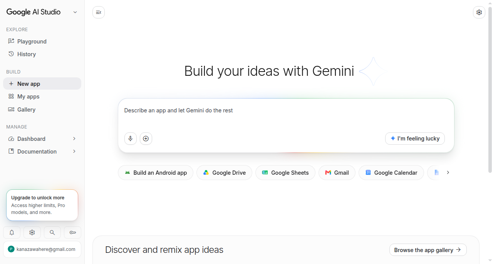
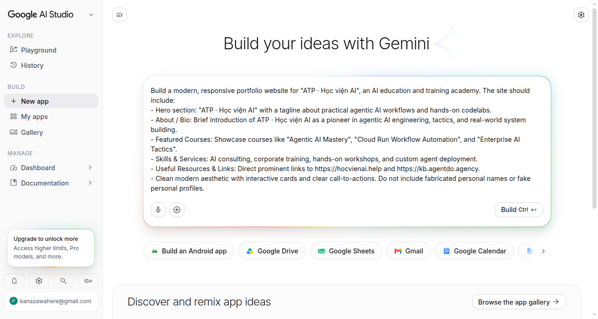
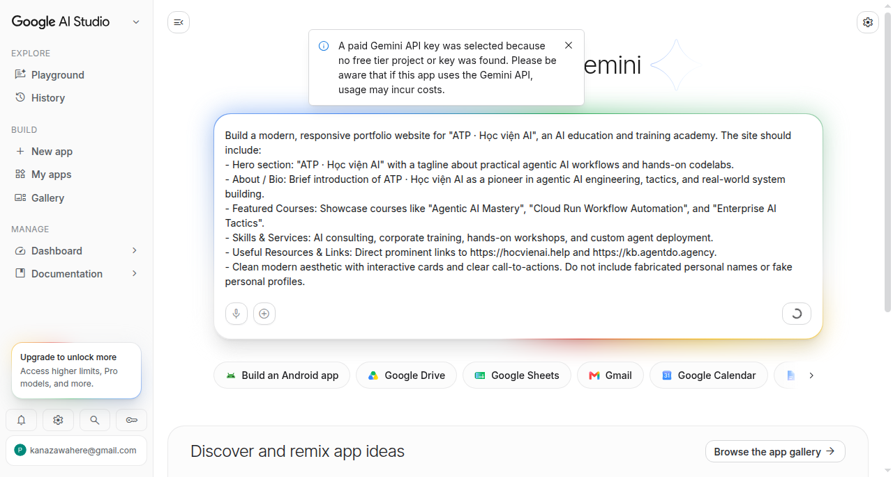
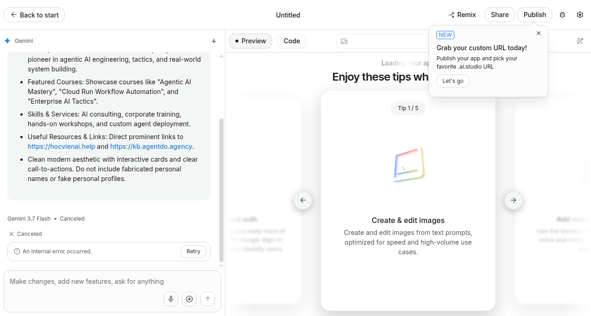
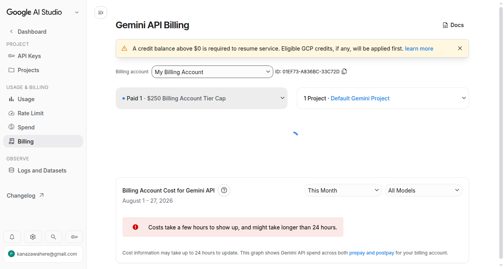
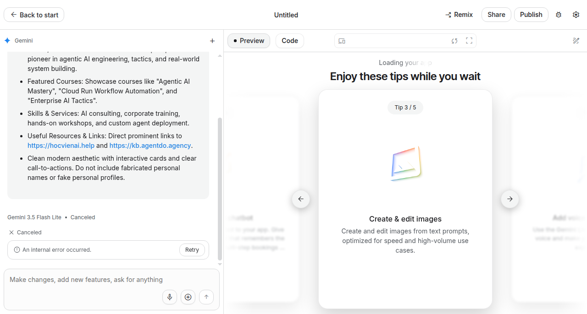

6 Portfolio website với AI Studio Build Mode — và quả mìn billing tầng tài khoản
Làm thật 2026-08-27 (worker agy tự lái browser, 42 screenshot hiện trường). Bản gốc: codelab của Google. Bài này khác cả cuốn: không gõ dòng lệnh nào — mô tả website bằng lời trong AI Studio Build Mode, AI sinh code, bấm Publish là lên Cloud Run. Nghe là bài dễ nhất cuốn sách.
Trạng thái trung thực: lần làm thật KẸT ở quả mìn billing trước cả khi sinh được dòng code đầu tiên — và vì kẹt nên chương này moi ra được sự thật mà bản gốc không nói: chữ “free” của Build Mode có điều kiện ở tầng tài khoản. Phần Publish sẽ bổ sung khi chạy lại bằng tài khoản sạch.
6.1 Flow chuẩn của bài (theo bản gốc)
- Mở aistudio.google.com/apps (Build Mode)
- Gõ prompt mô tả portfolio (bio, dự án, kỹ năng, link liên hệ)
- Xem preview, chỉnh tiếp bằng chat (“vibe coding”)
- Bấm Publish → deploy lên Cloud Run — Starter Tier cho 2 app đầu miễn phí, không cần billing


6.2 🔴 MÌN LỚN NHẤT — “free” nhưng chết từ tầng TÀI KHOẢN
Vừa bấm Build, thay vì sinh code, hiện cảnh báo rồi chết ngay:
“A paid Gemini API key was selected because no free tier project or key was found.”

“Gemini 3.7 Flash • Canceled — An internal error occurred.”

“Internal error” là thông báo đánh lạc hướng — không phải lỗi hệ thống Google. Truy tới gốc (đối chứng cả Playground, soi trang Billing):

Gốc: tài khoản từng bật Billing Tier 1 Prepay và đã cạn số dư ($0). Khi đó Google chặn mọi lượt gọi Gemini API của toàn tài khoản — Build Mode, Playground, tất cả — bất kể bài quảng cáo “2 app đầu free không cần billing”.
6.3 Các cách né ĐÃ THỬ THẬT (đừng tốn thời gian thử lại)
| Cách thử | Kết quả thật |
|---|---|
| Retry / đổi model nhẹ hơn (Flash Lite) | Chết y hệt — “unexpected error” |
| Tạo project mới từ UI AI Studio | Bị chặn luôn: “Failed to create project, The request is suspicious” |
Tạo project sạch bằng gcloud projects create (né được chặn UI!) → Import projects trong AI Studio → tạo API key mới → Build lại |
Import OK, key tạo OK — nhưng Build vẫn chết: chặn nằm ở tầng tài khoản, không phải tầng project |

Vậy cách né THẬT SỰ là gì?
Dùng tài khoản Google CHƯA TỪNG bật Billing Prepay (hoặc nạp lại credit cho account cũ). Đây là điều kiện ẩn của chữ "free": Starter Tier chỉ free với account "sạch billing". Trước khi dạy bài này cho lớp đông người — dặn học viên dùng account Google cá nhân thường (chưa từng đụng GCP billing) là an toàn nhất, và đó cũng chính là khuyến cáo "personal account recommended" trong prerequisites của bản gốc mà ít ai để ý lý do.6.4 Mìn phụ đã xác minh
- Lệnh
gcloud projects createné được cái chặn “request is suspicious” của UI — 2 cửa này kiểm khác nhau. - Cảnh báo “paid key was selected” xuất hiện TRƯỚC khi chết = tín hiệu sớm nhất cho biết account bạn không còn free tier. Thấy dòng này → dừng, kiểm trang Billing, đừng bấm Retry vô ích.
- Thời gian thực tế của toàn bộ vòng chẩn đoán (kể cả đối chứng Playground + soi billing): ~16 phút. Nếu biết trước mìn này: 0 phút.
6.5 Ôn nhanh
Q: Build Mode báo "An internal error occurred" ngay khi bấm Build. Phản xạ đúng là gì?
- Bấm Retry tới khi được — lỗi internal là phía Google
-* Để ý cảnh báo "a paid Gemini API key was selected" phía trên + mở trang Billing kiểm tra — "internal error" ở đây thật ra là chặn billing tầng tài khoản
- Đổi trình duyệt
E: Lần làm thật: account dính Prepay $0 → Google chặn mọi lượt gọi Gemini toàn tài khoản, thông báo lỗi lại rất mù mờ.
Q: Tạo project GCP sạch không billing rồi Import vào AI Studio có cứu được account dính Prepay $0 không?
- Có — free tier tính theo project
-* Không — đã thử thật: chặn nằm ở tầng TÀI KHOẢN, project sạch/key mới đều vô ích
- Chỉ cứu được nếu project ở region US
E: Import OK, tạo key OK, Build vẫn Cancel. Cách né thật: dùng account Google chưa từng bật Prepay.
Q: UI AI Studio chặn tạo project mới ("request is suspicious"). Còn đường nào tạo project?
-* gcloud projects create từ CLI — 2 cửa kiểm khác nhau, CLI vẫn tạo được bình thường
- Hết đường, phải đợi Google mở lại
- Dùng chế độ ẩn danh
E: Đã verify thật: CLI tạo ACTIVE ngay trong khi UI từ chối cùng account.